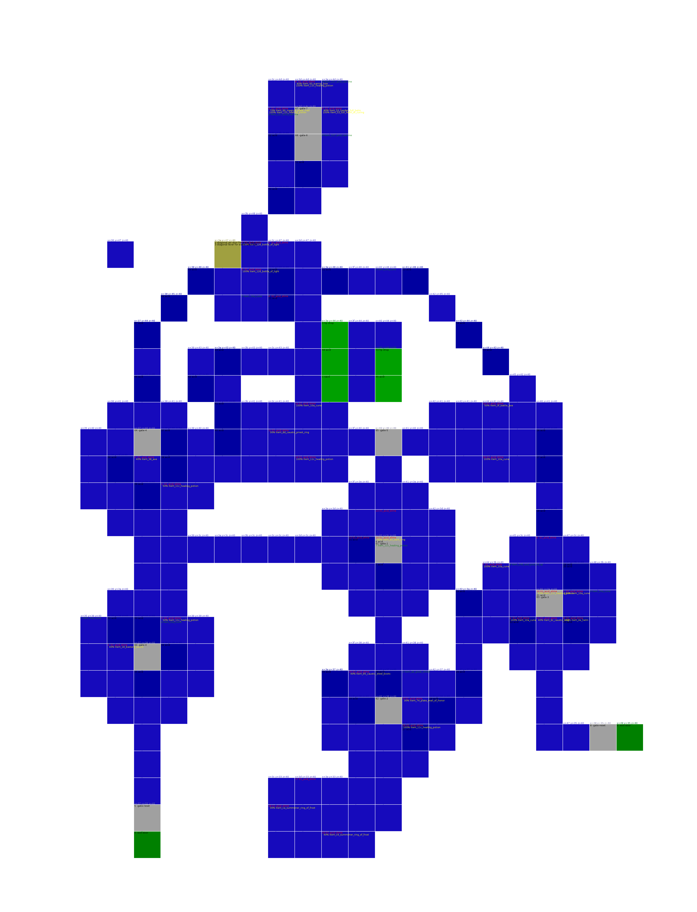
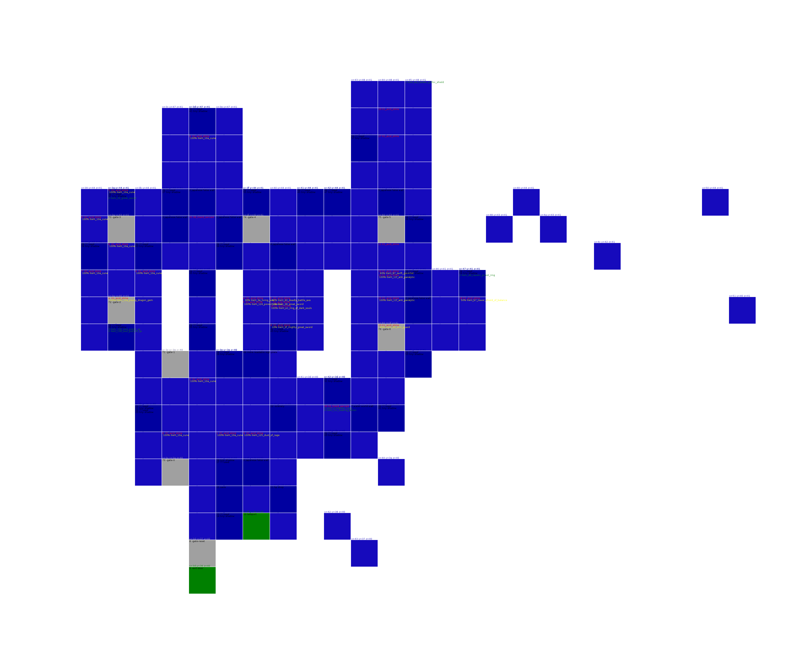
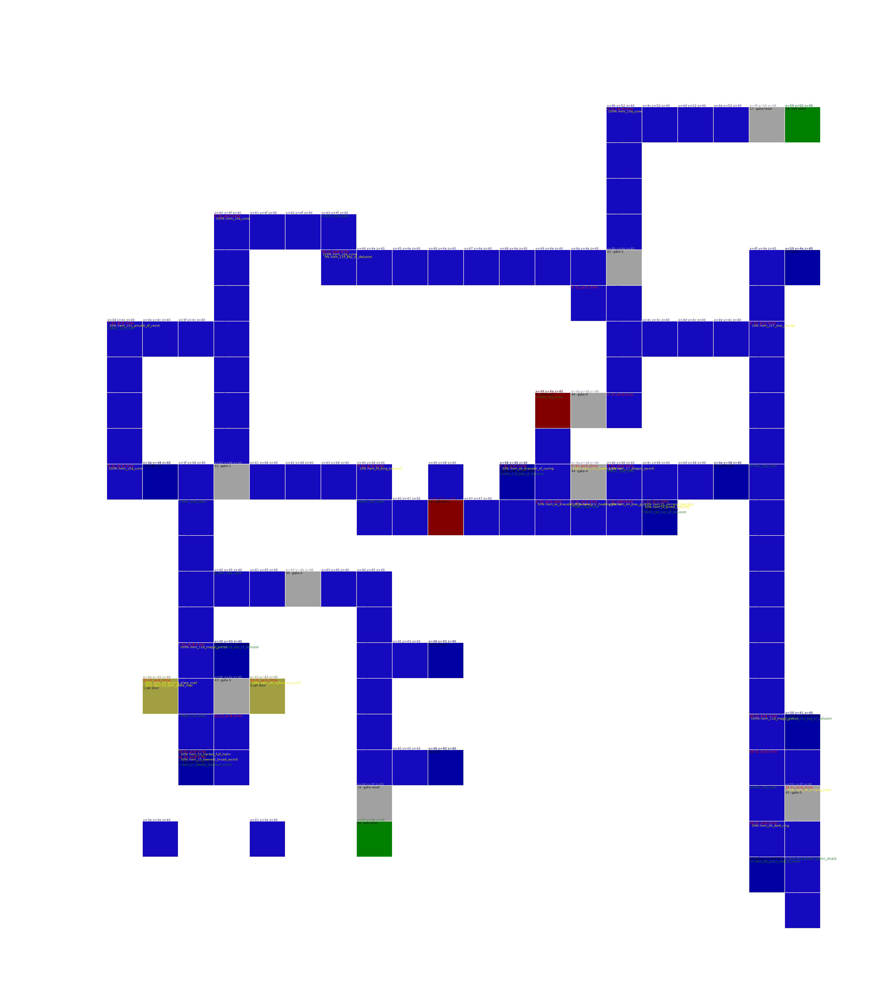
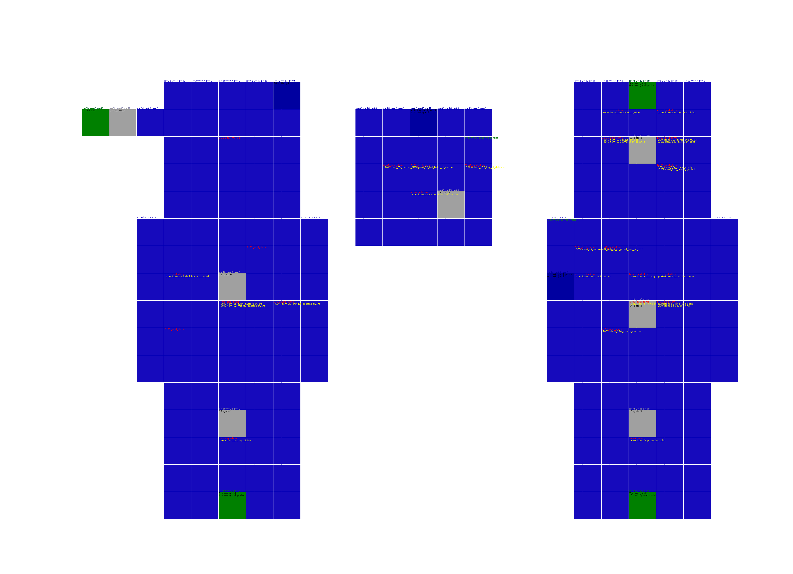

Human World
human_world_solitary_region
Item Memory used 9
0 item_11c_healing_potion
1 item_11e_anti_venom
2 item_124_poison_vaccine
3 item_a2_buckler
4 item_35_morning_star
5 item_10a_cune
7 item_136_soul_pod_5_sp
8 item_83_gauntlet
9 item_11d_magic_potion

human_world_hidden_region
Item Memory used 10
0 item_127_acid_vaccine
1 item_12e_dorados_ashes
2 item_11e_anti_venom
3 item_10a_cune
4 item_11c_healing_potion
5 item_11c_healing_potion
6 item_48_crown
7 item_33_crushing_mace
8 item_ec_bracelet_of_recovery
9 item_4a_crown_of_composure
a item_10a_cune
b item_123_fire_world_stone
c item_94_steel_boots_of_resist
d item_11e_anti_venom

human_world_forgotten_region
Item Memory used 9
0 item_126_bottle_of_light
1 item_8d_leather_boots
2 item_11e_anti_venom
3 item_6a_fiery_plate_mail
4 item_12f_spirit_key
5 item_11c_healing_potion
6 item_11c_healing_potion
7 item_11d_magic_potion
8 item_11d_magic_potion
9 item_125_dust_of_rage
a item_128_spirit_book

human_world_cursed_region
Item Memory used 6
21 100% 0x50 0a_guardian_a
30 100% 0x30 04_fat_mole_a
0 item_11d_magic_potion
1 item_129_sealed_sword_stone
2 item_11c_healing_potion
3 item_12c_pitcher_of_nadya_hp
4 item_10a_cune
5 item_124_poison_vaccine
6 item_10a_cune
7 item_11c_healing_potion

Earth World
earth_world_rotting_cavern
Item Memory used 5
1b 100% 0x60 0e_auriel_a
1c 100% 0x30 0e_auriel_a
1d 100% 0x30 0e_auriel_a
1e 100% 0x30 0e_auriel_a
30 100% 0x20 0a_blank
0 item_11d_magic_potion
1 item_137_soul_pod_53_sp
2 item_5d_leather_armor
3 item_11c_healing_potion
4 item_120_divine_symbol
5 item_120_divine_symbol
6 item_11d_magic_potion
7 item_11d_magic_potion

earth_world_poisonous_cavern
Item Memory used 10
20 100% 0x10 00_duhrin
30 100% 0x20 05_blank
31 100% 0x70 04_auriel_b
32 100% 0x50 0b_blank
33 100% 0x50 0a_blank
0 item_127_acid_vaccine
1 item_27_great_sword
2 item_11c_healing_potion
3 item_67_plate_mail_of_curing
5 item_10a_cune
6 item_a7_large_shield
7 item_11f_anti_paralytic
8 item_11c_healing_potion
a item_137_soul_pod_53_sp
b item_12e_dorados_ashes
1c item_1e_fiery_bastard_sword
1d item_11c_healing_potion

earth_world_stone_cavern
Item Memory used 7
13 100% 0x25 0c_dybbuk
30 100% 0x50 00_dybbuk
100% item_123_fire_world_stone
31 100% 0x0 04_dybbuk
32 100% 0x0 04_dybbuk
0 item_122_evil_eye
1 item_93_steel_boots_of_curing
2 item_dd_caustic_priest_ring
3 item_e4_ring_of_dead_spirit
4 item_11c_healing_potion
5 item_11c_healing_potion
6 item_138_soul_pod_29_sp
7 item_11d_magic_potion

earth_world_quaking_cavern
Item Memory used 5
0 item_10a_cune
1 item_dc_caustic_ring
2 item_11c_healing_potion
3 item_124_poison_vaccine
4 item_d7_ring_of_poison
5 item_11c_healing_potion
6 item_11c_healing_potion
7 item_11c_healing_potion
8 item_11c_healing_potion
9 item_64_plate_mail

earth_world_false_pit_cavern
Item Memory used 8
b 100% 0x30 08_guardian_b
100% item_a9_large_shield_of_balance
c 100% 0x30 08_guardian_b
0 item_11c_healing_potion
1 item_10a_cune
2 item_11c_healing_potion
3 item_4f_magical_helm
4 item_11c_healing_potion
5 item_11c_healing_potion
6 item_11c_healing_potion
7 item_11c_healing_potion
8 item_11d_magic_potion
9 item_10a_cune
a item_43_warrior_bow
b item_11c_healing_potion
c item_137_soul_pod_53_sp
d item_124_poison_vaccine

earth_world_hostile_rock_cavern
Item Memory used 4
21 100% 0x10 04_dread_knight
100% item_11c_healing_potion
0 item_11c_healing_potion
1 item_11c_healing_potion
2 item_10a_cune
3 item_11_broad_sword
4 item_87_swift_gauntlet

Fire World
fire_world_burning_cavern
Item Memory used 4
0 item_11c_healing_potion
1 item_10e_sacred_feather
2 item_10c_torch
3 item_11c_healing_potion
4 item_10a_cune

fire_world_molten_cavern
Item Memory used 7
21 100% 0x10 02_dead_abraxus
30 100% 0x10 00_abraxus
31 100% 0x5 0c_fat_mole_c
32 100% 0x5 08_fat_mole_b
0 item_31_blood_sword
1 item_e2_black_ring
2 item_11c_healing_potion
3 item_11d_magic_potion
4 item_123_fire_world_stone
5 item_137_soul_pod_53_sp
6 item_138_soul_pod_29_sp
7 item_124_poison_vaccine

fire_world_phoenix_cave
Item Memory used 9
0 item_103_sorcerer_amulet
1 item_c6_ring_of_fire_resist
2 item_ad_great_shield_of_balance
3 item_10a_cune
4 item_102_mind_amulet
5 item_10a_cune
6 item_10a_cune
7 item_97_steel_boots_of_balance
8 item_10a_cune
9 item_11c_healing_potion
a item_2e_crushing_great_sword
b item_25_magical_bastard_sword
c item_d6_dark_sorcerer_ring
d item_11c_healing_potion
e item_122_evil_eye

fire_world_ashen_cavern
Item Memory used 5
20 100% 0x100 0c_ebony_knight
0 item_10a_cune
1 item_da_sorcerer_ring_of_poison
2 item_8f_hard_boots
3 item_11c_healing_potion
4 item_10a_cune
6 item_11c_healing_potion
7 item_122_evil_eye

Water World
water_world_impure_pool_area
Item Memory used 6
30 100% 0x5 00_fat_mole_f
31 100% 0x5 04_blank
0 item_12d_pitcher_of_nadya_mp
1 item_30_guardian_great_sword
2 item_10c_torch
3 item_107_star_amulet
4 item_10a_cune
5 item_131_flaming_key
water_world_sunken_river_area
Item Memory used 9
0 item_12e_dorados_ashes
1 item_11e_anti_venom
2 item_f2_priest_bracelet
3 item_d5_dark_priest_ring
4 item_10a_cune
5 item_126_bottle_of_light
6 item_56_great_helm
7 item_8a_arm_guard_of_composure
1c item_e1_ring_of_dark_souls
1d item_11f_anti_paralytic

water_world_white_rain_area
Item Memory used 5
20 100% 0x10 05_magi_magus
100% item_11e_anti_venom
0 item_12e_dorados_ashes
1 item_10c_torch
2 item_11c_healing_potion
3 item_11c_healing_potion
4 item_78_knight_plate_mail
water_world_watery_labyrinth_area
Item Memory used 9
0 item_10c_torch
1 item_137_soul_pod_53_sp
2 item_10c_torch
3 item_10e_sacred_feather
4 item_10a_cune
5 item_10a_cune
6 item_b1_tower_shield
7 item_be_gothic_shield_of_balance
8 item_5a_holy_great_helm
9 item_15_keenest_broad_sword
a item_c5_summoner_ring_of_fire

Monster World
monster_world_false_eye_area
Item Memory used 6
30 100% 0x10 02_lizard_servant
31 100% 0x10 06_lizard_servant
100% item_cf_soul_ring
0 item_124_poison_vaccine
1 item_10a_cune
2 item_11c_healing_potion
3 item_10a_cune
4 item_11d_magic_potion
5 item_136_soul_pod_5_sp
6 item_139_soul_pod_14_sp

monster_world_screeching_area
Item Memory used 4
21 100% 0x10 0e_necron
100% item_10a_cune
30 100% 0x10 01_auriel_c
100% item_11c_healing_potion
0 item_11d_magic_potion
1 item_11c_healing_potion
2 item_136_soul_pod_5_sp
1c item_11c_healing_potion

Illusion World
illusion_world_gloomy_domain
Item Memory used 2
30 100% 0x20 0e_blank
2 item_124_poison_vaccine
3 item_11c_healing_potion
5 item_11c_healing_potion
6 item_11c_healing_potion

illusion_world_bewilderment_domain
Item Memory used 5
0 item_138_soul_pod_29_sp
1 item_139_soul_pod_14_sp
2 item_11c_healing_potion
3 item_120_divine_symbol
4 item_136_soul_pod_5_sp
5 item_11c_healing_potion
6 item_11c_healing_potion
7 item_11c_healing_potion
8 item_11c_healing_potion
9 item_139_soul_pod_14_sp
a item_11c_healing_potion
b item_11c_healing_potion
c item_11d_magic_potion
d item_116_key_of_delusion
e item_116_key_of_delusion
f item_116_key_of_delusion
10 item_116_key_of_delusion
11 item_11d_magic_potion

illusion_world_worship_domain
Item Memory used 5
21 100% 0x5 04_wildowess
100% item_70_eternal_plate_mail
100% item_19_bastard_sword
22 100% 0x10 01_gorthaur
100% item_10a_cune
23 100% 0x5 08_fester
30 100% 0x80 02_fat_mole_d
100% item_10a_cune
0 item_11c_healing_potion
1 item_11f_anti_paralytic

illusion_world_dream_domain
Item Memory used 2
20 100% 0x10 01_disguise
0 item_10d_lamp
1 item_11c_healing_potion
2 item_11c_healing_potion

Death World
death_world_dark_castle_layer
Item Memory used 5
20 100% 0x30 08_armored_guardian
100% item_17_dragon_sword
0 item_11c_healing_potion
1 item_136_soul_pod_5_sp
2 item_126_bottle_of_light
3 item_11d_magic_potion
4 item_11d_magic_potion
death_world_gate_of_the_dead
Item Memory used 3
20 100% 0x5 0c_hollow_mage
0 item_11c_healing_potion
1 item_12e_dorados_ashes
2 item_123_fire_world_stone

death_world_lingering_curse_layer
Item Memory used 1
5 100% 0x40 05_unknown_g
6 100% 0x40 05_unknown_g
7 100% 0x40 05_unknown_g
30 100% 0x20 00_unknown_e
31 100% 0x20 04_blank
0 item_11c_healing_potion
1 item_11c_healing_potion
2 item_11c_healing_potion
3 item_11c_healing_potion

death_world_undead_layer
Item Memory used 10
21 100% 0x20 04_king_edward
30 100% 0x20 01_unknown_b
31 100% 0x10 09_pulsating_heart
32 100% 0x10 0d_fat_mole_e
0 item_11c_healing_potion
1 item_136_soul_pod_5_sp
2 item_126_bottle_of_light
3 item_11d_magic_potion
4 item_11d_magic_potion
5 item_127_acid_vaccine
6 item_11c_healing_potion
7 item_125_dust_of_rage
8 item_10c_torch
9 item_11e_anti_venom
a item_11c_healing_potion
1c item_122_evil_eye
1d item_11f_anti_paralytic

Shadow Tower
shadow_tower_part1
Item Memory used 0

shadow_tower_part2
Item Memory used 0

shadow_tower_part3
Item Memory used 0

Void
void
Item Memory used 0
0 0% 0x20 00_balron_a
3 0% 0x20 03_balron_b
5 0% 0x20 08_demon_king
30 100% 0x20 01_unknown_i
31 100% 0x20 02_unknown_j
32 0% 0x20 04_unknown_k